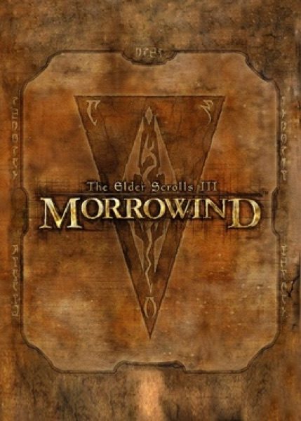

RPG · 2002
The Elder Scrolls III: Morrowind
An alien island with no quest markers, trusting you to get lost.

Cover: Wikipedia: The Elder Scrolls III: Morrowind
Facts
- Released
- 2002-05-01
- Genre
- RPG
- Category
- RPG
- Platforms
- PC, Xbox
- Developers
- Bethesda Game Studios
- Publishers
- 1C Company, Bethesda Softworks, Softclub, Ubisoft
PC requirements
- Minimum
- [object Object]